Indonesia
Indonesia
La ruta de Indonesia: 3 regiones, 12 monumentos. Cada monumento se construye en tres fases.
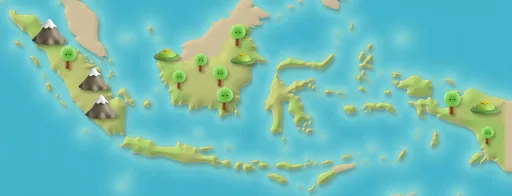
Yakarta
Pasos de ruta 1–12
Monas (Monumento Nacional)
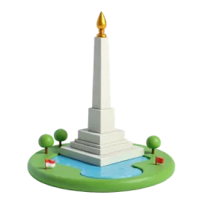
Fase 1 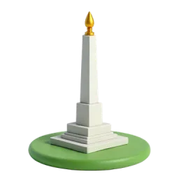
Fase 2 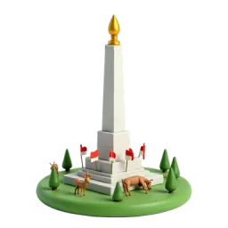
Fase 3 Este monumento de 132 metros está coronado por una llama cubierta de pan de oro. Fuente: Wikipedia
Mezquita Istiqlal
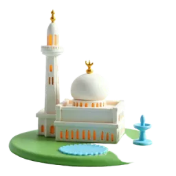
Fase 1 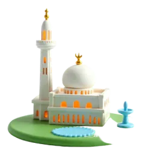
Fase 2 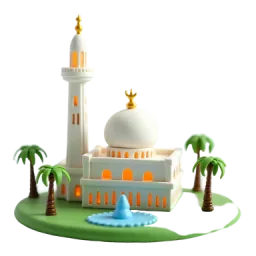
Fase 3 Su nombre significa ‘Mezquita de la Independencia’. Abrió en 1978 y es la mayor mezquita del Sudeste Asiático. Fuente: Wikipedia
Catedral de Yakarta
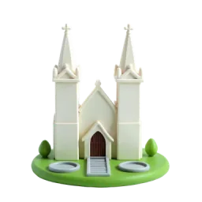
Fase 1 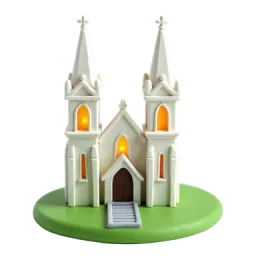
Fase 2 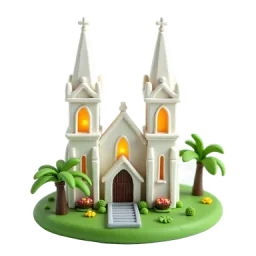
Fase 3 Esta catedral neogótica se consagró en 1901, y la mezquita Istiqlal está justo a su lado. Fuente: Wikipedia
Kota Tua, la ciudad vieja
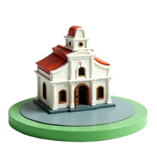
Fase 1 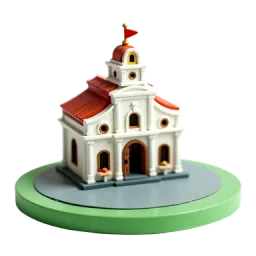
Fase 2 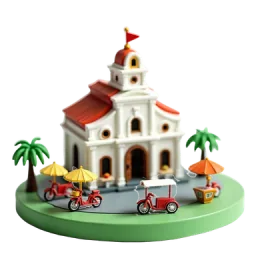
Fase 3 Kota Tua significa ‘Ciudad Vieja’; fue el primer centro amurallado de Batavia, el antiguo nombre de Yakarta. Fuente: Wikipedia
Yogyakarta
Pasos de ruta 13–24
Borobudur
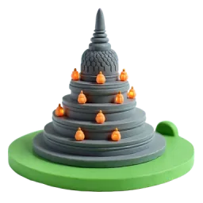
Fase 1 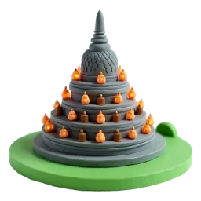
Fase 2 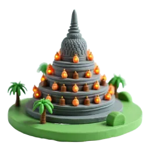
Fase 3 Este templo budista del siglo IX tiene 2672 paneles tallados y tuvo originalmente 504 estatuas de Buda. Fuente: Wikipedia
Prambanan
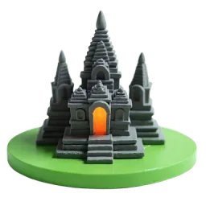
Fase 1 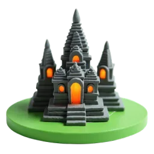
Fase 2 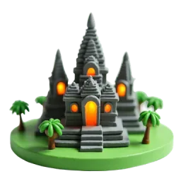
Fase 3 Construido en el siglo IX, Prambanan es el mayor conjunto de templos hindúes de Indonesia y Patrimonio de la UNESCO. Fuente: Wikipedia
Palacio del Sultán (Kraton)
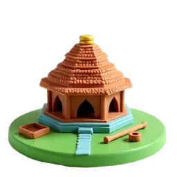
Fase 1 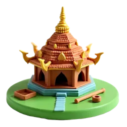
Fase 2 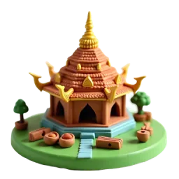
Fase 3 Construido en 1755–1756, el palacio aún acoge música gamelán, danzas javanesas y teatro de sombras. Fuente: Wikipedia
Volcán Merapi
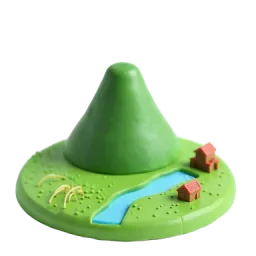
Fase 1 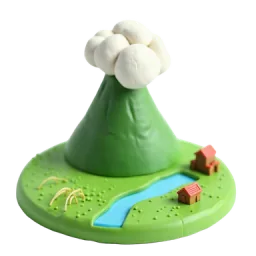
Fase 2 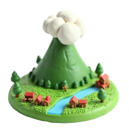
Fase 3 Merapi significa ‘Montaña de Fuego’ y es el volcán más activo de Indonesia. Fuente: Wikipedia
Bromo · Java Oriental
Pasos de ruta 25–36
Volcán Bromo
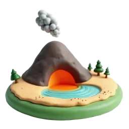
Fase 1 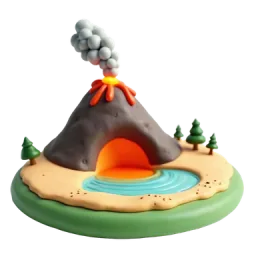
Fase 2 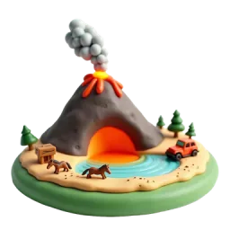
Fase 3 El Bromo se alza en medio de una amplia llanura de arena volcánica llamada ‘Mar de Arena’. Fuente: Wikipedia
Cráter de Ijen
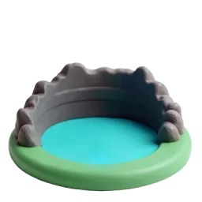
Fase 1 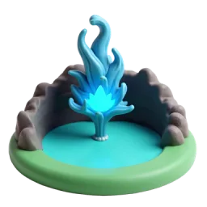
Fase 2 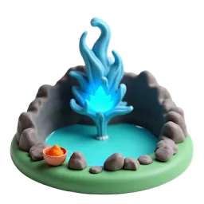
Fase 3 Ijen es famoso por su fuego azul y por un lago de cráter turquesa de casi un kilómetro de ancho. Fuente: Wikipedia
Cascada Tumpak Sewu
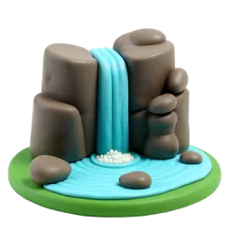
Fase 1 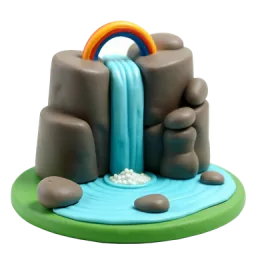
Fase 2 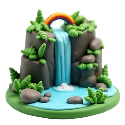
Fase 3 Tumpak Sewu significa más o menos ‘mil cascadas’ en javanés, porque muchas caen en un mismo valle semicircular. Fuente: Wikipedia
Monte Semeru
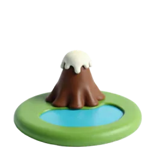
Fase 1 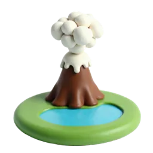
Fase 2 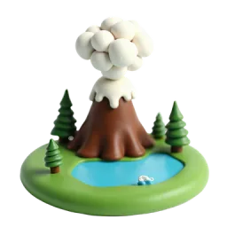
Fase 3 El Semeru es la montaña más alta de la isla de Java. También se le llama Mahameru, ‘la Gran Montaña’. Fuente: Wikipedia